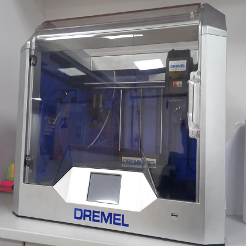
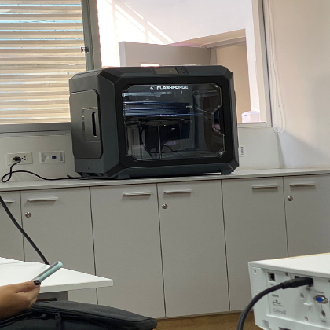
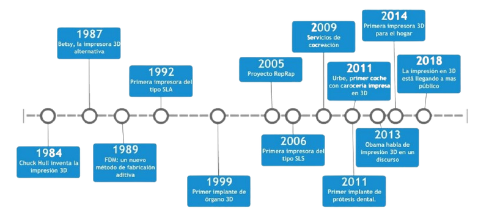
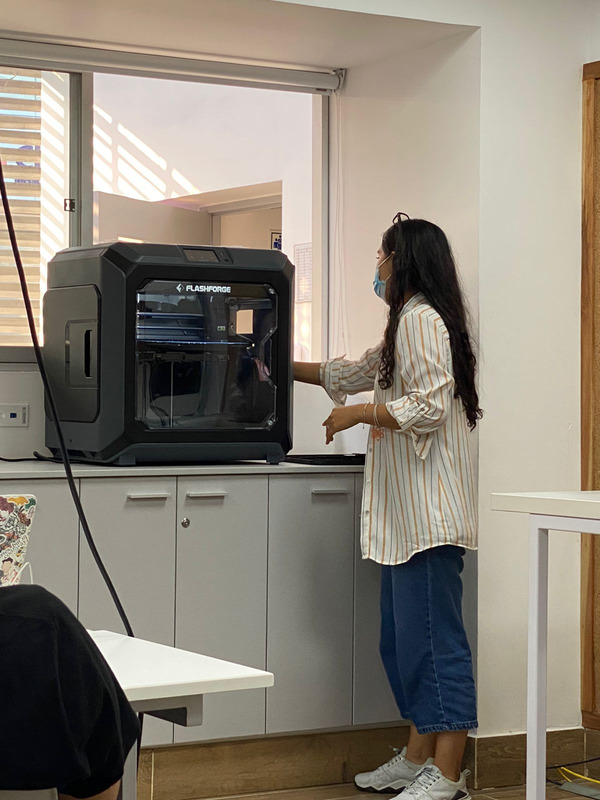
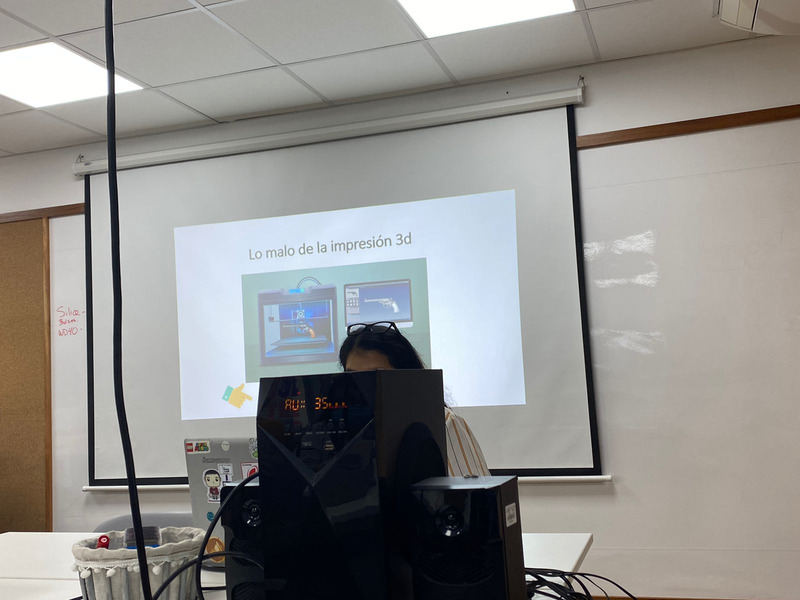
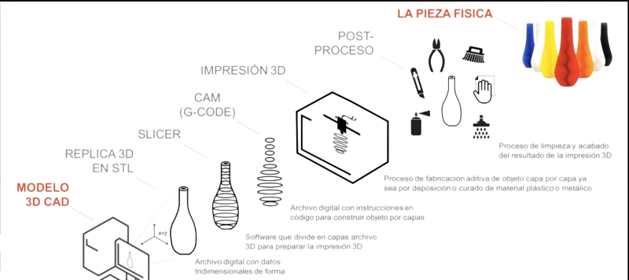

Semana 7 - 04/05/2022
La impresión 3D es el proceso el cual se crea un objeto físico sobre la base de un modelo digital.
El objeto digital que se deconstruye utilizando programas laminadores (slicers) y luego se reconstruye mediante una impresora 3D.
Impresoras estudiantiles


Historia de la impresión 3D
Ventajas de la impresion 3D
Customización y personalización
Velocidad y ahorro de costes
Menos residuos, sostenibilidad, ecológico.

Desventajas de la impresion 3D
Creación de armas y objetos peligrosos con las impresoras 3D
La piratería en la impresión 3D
Intoxicación con filamento ABS

Proceso para imprimir en 3D
* El rango de temperatura para imprimir es 180 a 220 °C